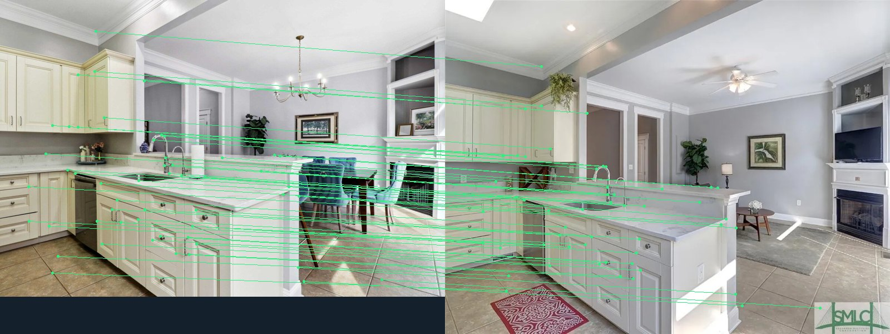
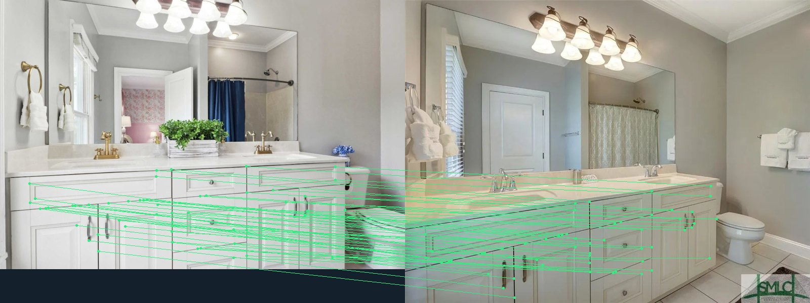
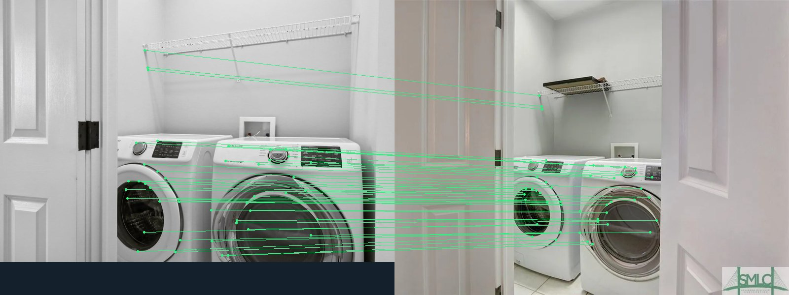
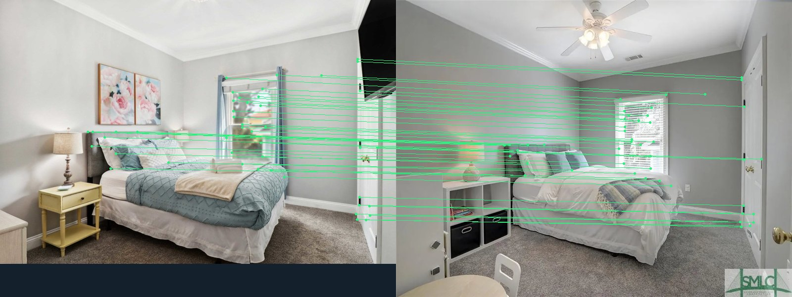
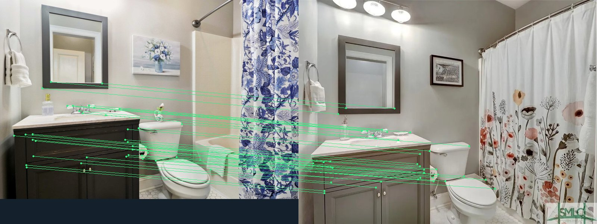
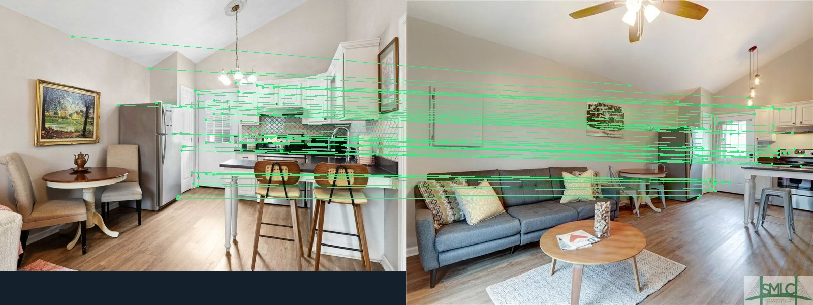

User-confirmed property match.
Visual compatibility score: 26.3; 128 feature inliers. This is not an identity probability.
View Airbnb listing · View Realtor listing · Back to map
SuperPoint + LightGlue. Green lines connect geometrically consistent features.





